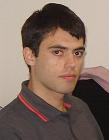

Informações Pessoais
- Nome: Guilherme Goettems Schneider
- Nascimento: 15/09/1981
- Nacionalidade: Brasileira
- E-mail: guigs81@gmail.com
- Celular: +55 51 9125 7515
- Endreço: Rua Doralina Silveira Dias, 180/32H.
Bairro Santa Tereza. CEP: 93037-070. São Leopoldo-RS. Brasil. - Interesses: Arquitetura de sistemas, gerência de configuração, qualidade, algoritmos, empreendedorismo, SaaS e usabilidade.
- LinkedIn: Ver perfil
Educação
- Bacharel em Ciência da Computação, UFRGS, Porto Alegre-RS (2004) com mais de 80% de conceito 'A' (GPA 3,79)
- Ensino Fundamental e Médio no Colégio Sinodal (1989-1999)
Artigos e monografias
- Trabalho de Graduação: Estudo Prático da Ferramenta BREW através do Desenvolvimento de um Jogo Multijogador em Rede
 – Instituto de Informática da UFRGS (dez/2004).
– Instituto de Informática da UFRGS (dez/2004).
Experiência Profissional
| Período | Empresa/Cargo/Projetos | Atividades | Tecnologias, ferramentas e metodologias |
|---|---|---|---|
| Fev/11‑hoje (integral) Jun/07‑Jan/11 (part time) |
Empreendedor. Criação do Tá Tri Imóveis, um buscador de imóveis local e web crawler. | Desenvolvimento, operações, finanças e vendas. |
Ruby on Rails, MySQL, HTML, CSS, Javascript, Netbeans, Subversion, Redmine, SEO, Google AdSense, Google AdWords, DFP Small Business. |
| Fev/10‑Jan/11 | Consultor do MEC no projeto AGHU. | Desenvolvimento, análise e gerência de configuração. | Principais: Java Seam, JPA, Hibernate, JSF, Eclipse, Subversion, Scrum. Outras: Oracle Database, Oracle Forms, PostgreSQL. |
| Mar/04‑Jan/10 | Colaborador da iProcess. Principais projetos/clientes: Grupo Pão de Açúcar, C&C, Unimed Fortaleza. |
Analista, projetista e desenvolvedor de sistemas BPM e integração de sistemas. | Principais: Oracle Database, PL/SQL, PL/SQL Web, Oracle Workflow, XHTML, CSS, Javascript, Java, Oracle BPEL. Outras: MPS.BR, BPMN, Oracle Designer, OWSM, WID. |
| Dez/04‑Mar/07 | Consultor na Tlantic pela iProcess. Cliente: Sonae (Portugal). |
Desenvolvedor e projetista de Workflow. | Principais: Oracle, PL/SQL, Oracle Workflow. Outras: CMMI 2, ClearCase. |
| 2005, 250h | Desenvolvimento de um sistema de gerência de conteúdo para a IsoService. | Analista e Desenvolvedor. | PHP e HTML |
| Dez/02‑Dez/03 | Bolsista de Iniciação Científica no projeto de mestrado de Rafael Roco de Araújo na Engenharia de Produção e Transportes da UFRGS. | Implementação de algoritmos de roteirização. | C++ |
| Dez/01‑Dez/02 | Bolsista de Iniciação Científica no projeto de doutorado de Érika Fernandes Cota no Grupo de Microeletrônica da UFRGS. | Implementação de algoritmos de otimização heurística (simulated annealing). | C++ |
Prêmios e Certificações
- Sun Certified Programmer for J2SE 6.0, pontuação 90% (jan/2009).
- OCEB (OMG Certified Expert in BPM), Technical Advanced (dez/2008).
- OCEB (OMG Certified Expert in BPM), Technical Intermediate (dez/2008).
- OCEB (OMG Certified Expert in BPM), Fundamental (jul/2008).
- Oracle SOA Implementation Champion (jan/2008).
- Participação no projeto que ganhou o prêmio Gold Award no 2006 Global Awards for Excellence in BPM & Workflow (Pan European) para Modelo Continente Hipermercados (Portugal).
- Finalista na etapa brasileira da Maratona de Programação 2004 (São Paulo, 2004).
- Apresentações de trabalho no XIV (2002), XV (2003) e XVI (2004) Salão de Iniciação Científica, recebendo destaque em 2003.
- Participação no programa MESE, com primeiro lugar na classificação e quarto lugar na final regional (RS, 1999).
- Medalha de bronze na Olimpíada Regional de Matemática do RS, Nível 3 (1999).
- Menção honrosa na 21ª Olimpíada Brasileira de Matemática, Terceiro Nível (Ensino Médio) - 1999.
{kind=link}
{kind=link}
{kind=link}
Idiomas
- Português (nativo).
- Curso de inglês na Go Ahead (2007 e 2008).
- Curso de inglês no Unilínguas – Unisinos (concluído nível Avançado IV em 2002).
- Curso de inglês no Centre Linguista em Toronto, Canadá (fev/2000).
- Curso de espanhol na Cultura Americana, Novo Hamburgo (2008 a 2011).
Outros
- Curso de WebSphere Integration Developer e Process Server (BI111 and BI112) na IBM - São Paulo (80h, 2007).
- Viagem a Portugal para homologação de sistema no Sonae (jul/2006).
- Curso de desenvolvimento de jogos eletrônicos no CEI-UFRGS (40h, 2004).
- Participação no Desafio Sebrae (2003 e 2004).
- Membro da Comunidade de desenvolvimento de jogos Allegro (desde 2000).
- Participação no Programa Miniempresa da Junior Achievement (1998).
- Desenvolvimento de jogos em QBasic e C++ como hobby (1995 a 2001).
{kind=link}